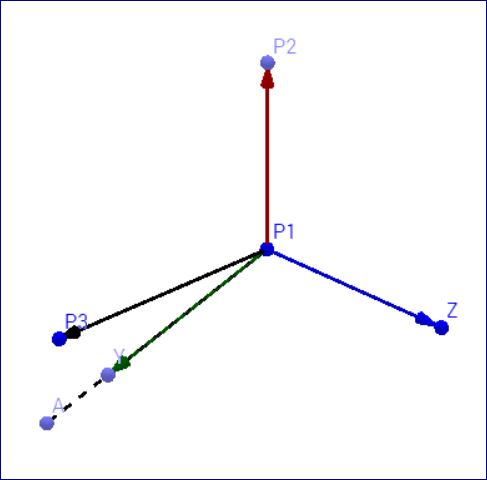

User Coordinate Systems¶
Users can define their own coordinate system which can be used in visualizing CAE results . VCollab provides different types of interfaces to user to define coordinate system.
Coordinate System Manager Panel

Name |
New Coordinate system name. |
Type |
Coordinate system type. i.e., Rectangular/Cylindrical/Spherical. |
Definition |
Allows user to select a interface method to define coordinate system. |
Origin |
Allows user to pick vertex in model or enter new origin coordinates separated by comma. |
X Axis |
Defines X axis vector. |
XY Plane |
Defines Y axis vector. |
Create |
Create new coordinate system and adds to the list box. |
Delete |
Deletes selected coordinate systems by names. |
Types of Coordinate Systems
VCollab provides following coordinate system types,
Rectangular
A cartesian coordinate system represented as (X, Y, Z) .
Cylindrical
A Polar coordinate system represented as (r, j, Z)
Where,
r is radial distance from the coordinate to Z axis.
j is angle of deviation from X axis to projection of OP into XY plane (OQ).
Z is same as in Cartesian coordinate system.
Spherical
A Polar coordinate system represented as (r, q, j)
Where,
r is distance from origin to the coordinate.
q is angle of deviation from X axis to projection of OP into XY plane (OQ).
j is angle of deviation from Z axis to the coordinate positional vector OP.

Definition of Coordinate System
Independent of types, any new coordinate system requires a new origin and orientation relative to global or current coordinate system.
VCollab provides different ways to user to define a new coordinate system. Origin is common input for all methods. User can pick a vertex in model to define as new origin.
X Axis and XY Plane
User has to provide 3 points. Pick option can be used to select vertices from the model.
Origin : First Point (P1)
X axis : Second point - Origin (P2-P1)
Z axis : Cross product of (P3-P1) and (P2-P1)
Y axis : Cross product of Z and X axes.

X Axis and Y Axis
Pick options is enabled only for origin.
Origin : Picked or Entered point.
X Axis : Entered by user.
Y Axis : Entered by user.
Arbitrary Axis and Angle
Pick options is enabled only for origin.
Orientation of new coordinate system is defined here by axis of rotation and angle in degrees.
Origin : Picked or Entered point.
X Axis : Derived from Orientation.
Y Axis : Derived from Orientation.
3 Points Circular
User has to pick or enter three non collinear points(P1,P2,P3). Points are considered in periphery of a circle.
Origin : Center of circle.
X Axis : Origin to P1.
Z Axis : Normal of plane formed by circle.
Y axis : Derived from X and Z axes.
How to create a new user defined coordinate system (UCS)?
Enter a new coordinate system name.
Select coordinate type
Select a method to define a new coordinate system.
Either enter or pick coordinates to define origin, X and Y axes.
Click ‘Create’ button to create an UCS.
Created UCS will be listed in the list box with check boxes.
User can turn ON/OFF UCS visibility in viewer by using check boxes.
User can select multiple coordinate systems and delete them.